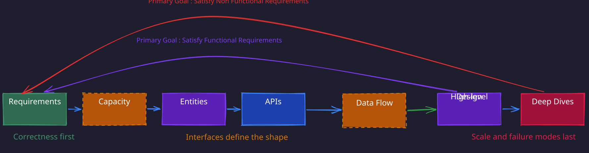

1. Understand Requirements (5 minutes):
- Identify Functional Requirements (core features like “users should be able to post tweets”).
- Define Non-functional Requirements (system qualities like scalability or low latency).
2. Capacity Estimation:
- Perform rough calculations only if they directly influence your design decisions.
- You can just write the capacity in non functional requirement at this point and mention that I will come back to these at the time of tradeoffs
3. Core Entities (2 minutes):
- List the main entities (e.g., User, Tweet) to define terms and data central to the system.
- Don’t need to add all the fields at this point in time. Just mention that I will add the fields as we go ahead.
4. API or System Interface (5 minutes):
- Define the contract between the system and its users (e.g., RESTful API endpoints).
5. Optional Data Flow (5 minutes):
- Describe the sequence of actions the system performs, if applicable.
6. High-Level Design (10-15 minutes):
- Create a simple architecture with components like servers, databases, and caches.
- Focus on satisfying the API and functional requirements first.
7. Deep Dives (10-15 minutes):
- Address non-functional requirements, edge cases, and bottlenecks.
- Iterate on the design to improve efficiency and scalability.

Non Function Requirement List
| Acronym | Requirement | Description | Target Range |
|---|---|---|---|
| S | Scalability | Can the system handle increasing load gracefully (e.g., 10x users)? | Start with 5K QPS, scale to 50K+ |
| C | Consistency | Is data consistent across services/nodes? Strong vs Eventual? | Eventual by default |
| A | Availability | Is the system reliably accessible? What’s the target uptime (e.g., 99.99%)? | Start with 99.9% (8.6 hours downtime/year) |
| L | Latency | What is the response time requirement? (e.g., < 200ms P95) | P95: < 200 ms, P99: < 500 ms |
| I | Isolation | Bulkheads, fault isolation between tenants/services, blast radius containment | |
| R | Recovery | RPO/RTO targets, WAL durability, multi-region failover, replay from offsets |
1. RPO — Recovery Point Objective (Data Loss)
What it answers:
“How much data can we afford to lose?”
Typical values:
- Payments / financial → ~0 seconds
- Social / feeds → < 5 minutes
- Analytics → minutes to hours
2. RTO — Recovery Time Objective (Downtime)
What it answers:
“How fast should the system recover?”
Typical values:
- Critical systems → < 5 minutes
- Standard systems → < 15–30 minutes
Back of Envelope Calculation Cheat Sheet
| Component | Typical Metrics | Scale Triggers |
|---|---|---|
| Caching | 100–300 GB, ~1 ms latency, 100k ops/sec | Memory > 80%, latency > 1 ms, throughput > 100k |
| Databases | 1–10 TB, 10k–30k TPS, 5–10 ms writes | Write > 10k TPS, latency > 5 ms, geo needs |
| App Servers | 10k–50k connections, 8–16 cores, 64–128 GB RAM | CPU > 70%, memory > 80%, latency > SLA |
| Message Queues | 100k–500k msgs/sec, 1–5 ms latency | Throughput > 800k, lag, partition > 200k |
Fix a few numbers in your head
Time Math
- 1 day ≈ 100K sec = 10
- 1 month ≈ 30 days
- 1 year ≈ 10^5 * 30 days * 10 months ≈ 3×10⁷ sec
**Throughput ↔ Traffic Conversion
- 1 QPS ≈ 100K requests/day
- 10 QPS ≈ ~1M requests/day
Peak Traffic Multiplier
- Peak QPS ≈ 3× to 5× average QPS
Availability Math
- 99% ≈ - 3.65 day/year downtime
- 99.9% ≈ 8.6 hours/year downtime
- 99.99% ≈ 52 minutes/year
- 99.999% ≈ 5 minutes/year
Index Size Estimation
- Index size ≈ 20–30% of data size
- Secondary indexes multiply this
Data Conversions
| Unit | Equals (decimal) | **Power of 10 ** |
|---|---|---|
| KB (Kilobyte) | 1,000 bytes | 10³ Bytes |
| MB (Megabyte) | 1,000 KB | 10⁶ Bytes |
| GB (Gigabyte) | 1,000 MB | 10⁹ Bytes |
| TB (Terabyte) | 1,000 GB | 10¹² Bytes |
| PB (Petabyte) | 1,000 TB | 10¹⁵ Bytes |
| EB (Exabyte) | 1,000 PB | 10¹⁸ Bytes |
Data Size Estimations
| Item | Size (Approximate) |
|---|---|
| 1 character | 1 byte |
| 1 integer (32-bit) | 4 bytes |
| 1 float (64-bit) | 8 bytes |
| 1 timestamp | 8 bytes |
| UUID | 16 bytes |
| 1 email id | 100 bytes |
| 1 user record (minimal) | ~500 bytes |
| 1 image (profile pic) | 100 KB |
| 1 minute of video | ~10 MB (720p) |
| 1 webpage load | ~1 MB |
| One LinkedIn post | ~2KB |
| One A4 page of plain text | ~5 KB |
Monthly Active User Growth Estimation
| Product Type | Daily Active Users | Example Products | Usage in Interview |
|---|---|---|---|
| Small Startup / MVP | ~1K | Indie App, Side Project | Early traction, simple backend design |
| Mid-Scale B2C App | ~10K | Notion (early), Pocket Casts | Common for funded B2C SaaS / B2C apps |
| Large-Scale Product | ~100K | Duolingo, Medium | Complex system, caching, analytics, sharding |
| High Traction Unicorn | ~1M | Zomato, Swiggy, Cred | Nationwide user base, needs scale + reliability |
| Global-Scale Service | 10M–100M | Gmail, Facebook, WhatsApp | Planet-scale architecture, multi-region, CDNs |
Back of Envelop Calculations Number Deep Dive
🖥️ Modern Hardware Limits
| Resource | Typical (Common) Use Case | Maximum (Specialized) Capacity |
|---|---|---|
| Memory (RAM) | 256–512 GB | Up to 24 TB (U-24tb1.metal) |
| Local SSD | 1–10 TB | 60 TB (i3en.24xlarge) |
| HDD Storage | 50–100 TB | 336 TB (D3en.12xlarge) |
| Network (Intra) | 10 Gbps | 20–25 Gbps |
| Network (Cross) | 100–500 Mbps | Up to 1 Gbps |
| Latency | 1–2 ms (intra-region) | 100–150 ms (cross-region) |
🧠 Caching
| Metric | Typical Value | Max Value |
|---|---|---|
| Memory | 100–300 GB per instance | 1 TB+ (ElastiCache Redis) |
| Read Latency | < 1 ms | ~0.2–0.5 ms (optimized) |
| Write Latency | 1–2 ms | ~1 ms (intra-region) |
| Read Throughput | 50k–150k ops/sec | 1M+ ops/sec (with tuning) |
| Write Throughput | 50k–100k ops/sec | 500k+ ops/sec |
🔁 When to Scale:
- Memory usage > 80%
- Throughput > 100k ops/sec
- Read latency < 0.5 ms required
Example
- r6g.4xlarge → 128 GB RAM
- r6g.8xlarge → 256 GB RAM
- r6i.8xlarge → 256 GB RAM
- x2idn.8xlarge → 256 GB RAM
- x2idn.16xlarge → 512 GB RAM
Tip: Cache entire datasets if under 500 GB. Avoid complex eviction logic unless necessary.
🗄️ Databases
| Metric | Typical Value | Max Value |
|---|---|---|
| Storage | 1–10 TB | 64 TB (Postgres/MySQL), 128 TB (Aurora) |
| Read Latency | 1–5 ms (cached), 10–20 ms (disk) | 30 ms (disk, unoptimized) |
| Write Latency | 5–10 ms | 15 ms (commit) |
| Read TPS | 30k TPS | 50k TPS (Aurora) |
| Write TPS | 10k TPS | 20k TPS (Aurora) |
| Connections | 5k | 20k (with tuning) |
🔁 When to Scale:
- Dataset > 50 TiB
- Write TPS > 10k
- Read latency > 5 ms (uncached)
- Geo-distribution or backup window issues
💡 In AWS RDS, instance RAM and database storage scale independently. For example, a db.r6idn.8xlarge provides 256 GB RAM for the working set, while the database size can be 10–50 TB using EBS or Aurora storage. Performance depends on whether hot data fits in RAM; storage limits are defined by the RDS engine, not the instance size.
Example: Common AWS RDS instance mappings to RAM:
- db.r6g.4xlarge → 128 GB RAM
- db.r6g.8xlarge → 256 GB RAM
⚙️ Application Servers
| Metric | Typical Value | Max Value |
|---|---|---|
| Connections | 10k–50k per instance | 100k+ (optimized) |
| CPU | 8–16 cores | 64 cores |
| RAM | 64–128 GB | 2 TB (high-memory instances) |
| Network | 5–10 Gbps | 25 Gbps |
| Startup Time | 30–60 seconds (containers) | — |
When to Scale:
- CPU > 70–80%
- Memory > 80%
- Network > 20 Gbps
- Latency > SLA
💡 Tip: CPU is usually the bottleneck. Use memory for local caching/session storage.
Example: EC2 instance mapping to RAM:
| Instance | RAM | Connections (est.) | Cost / hr |
|---|---|---|---|
| c6i.8xlarge | 64 GB | 20k–100k | ~$1.4 |
| c6i.12xlarge | 96 GB | 40k–120k | ~$2.1 |
| x2idn.24xlarge | 768 GB | 100k–300k | ~$7.5 |
| x2idn.32xlarge | 1 TB | 150k–400k | ~$10 |
| u-12tb1.metal | 12 TB | 500k+ | $120+ |
📬 Message Queues
| Metric | Typical Value | Max Value |
|---|---|---|
| Throughput | 100k–500k msgs/sec per broker | 1M+ msgs/sec (Kafka) |
| Latency | ~ 5 ms | ~1 ms (highly optimized) |
| Message Size | 1–10 KB | Up to 10 MB (not recommended) |
| Storage | 1 TB per broker | 50 TB |
| Retention | Days to 1 week | Weeks to months |
When to Scale:
- Throughput > 800k msgs/sec
- Partition count > 200k
- Consumer lag increasing
- Cross-region replication needed